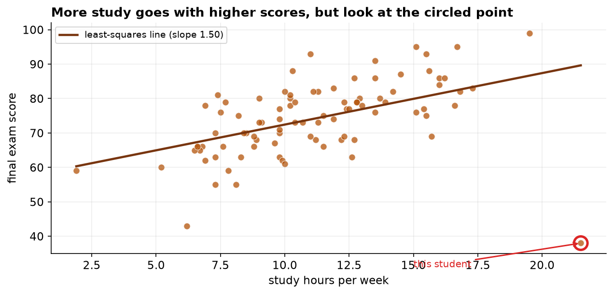
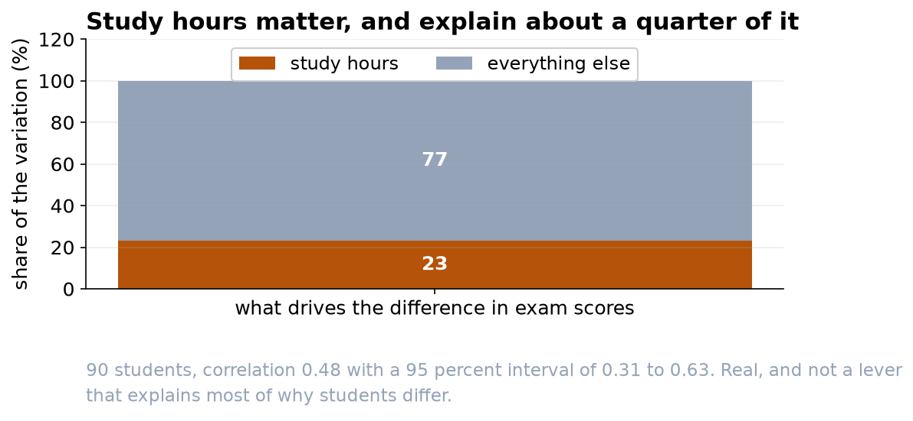
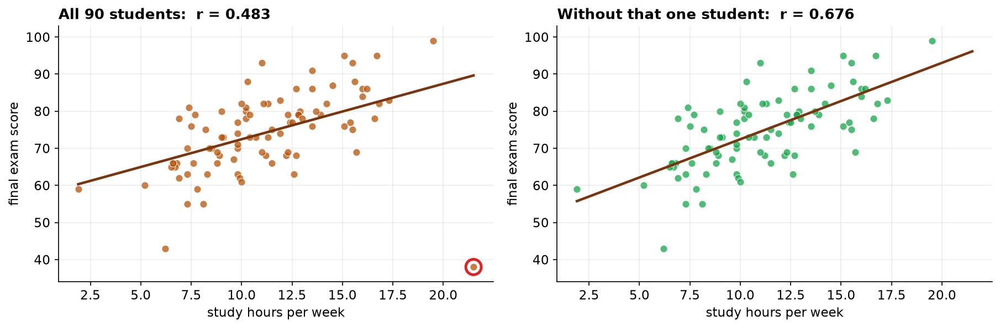

Study Hours Matter, and Explain About a Quarter of the Difference
A real positive relationship, with two caveats that belong in any message to students.
Recommendation
Students who study more do score better, and the relationship is real rather than chance (correlation 0.48, n = 90). But hours explain only about 23% of the difference between students, so please avoid messaging that implies hours are the main lever. And because this is a survey rather than an experiment, we cannot say that studying more causes the higher scores.
What we found
Across 90 students, weekly study hours and final exam score move together positively. The correlation is 0.48, and we are 95 percent confident the true value lies between 0.31 and 0.63, comfortably away from zero. Squaring it gives the more useful figure: study hours account for roughly 23 percent of the variation in scores, leaving about three quarters explained by everything else, prior preparation, teaching, circumstances, and luck on the day.


A caution about how much rests on one student
One student in the sample studied a great deal and scored poorly. That is a real person, not a data-entry error, so we have kept them in. It is worth knowing, though, that removing that single student would raise the correlation from 0.48 to 0.68. The headline number is therefore somewhat sensitive to one observation, which is a reason to describe the relationship as moderate rather than to quote the coefficient to two decimal places as though it were precise.

What we cannot say
This was a survey taken at one point in time, so we cannot tell which way the arrow points. It is equally consistent with the data that studying raises scores, that students who find the material easy (and therefore score well) also find it pleasant to study more, or that something else such as prior preparation drives both. A message that says 'study five more hours to gain ten points' would be reading a cause into a pattern that cannot support one.
Suggested wording for students
Something like: students who put in more study hours tend to do better, though hours alone account for about a quarter of the difference in results, so how you study matters as much as how long. That is accurate, useful, and does not over-promise.